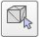

注意:方法中的第一項，應始終首先嘗試，這在大部分的情況下能簡化網格的幾何圖形。(如果不起作用請嘗試手動網格劃分)
Automatic mesh division(自動網格劃分):所有未通過公共邊緣連結的元素生成新形狀，並不總是適用於選定的網格，可從 [Menu bar --> Edit --> Grouping/Merging --> Divide selected shapes]進行；有時網格的形狀會超過預期，此時只需將邏輯上屬於一起的元素(即具有相同的視覺屬性且屬於同一連結的元素)合併回一個形狀即可，可從[Menu bar --> Edit -> Grouping/Merging --> Merge selected shapes])進行。
Extract the convex hull(提取凸殼):將網格轉換為凸殼來簡化網格，可從[Menu bar --> Edit --> Morph selection into convex shapes]進行。
Decimate the mesh(對網格進行解碼):可減少網格中包含的三角形數量，可從[Menu bar --> Edit --> Decimate selected shape...]進行。
Remove the inside of the mesh(移除網格的內部):此功能基於視覺感應器，根據所選的設置給出或多或少令人滿意的結果，可從 [Menu bar --> Edit --> Extract inside of selected shape]進行。
Manual mesh division(手動網格劃分):通過三角形編輯模式(以下說明)，可以手動選擇三角形，而不是邏輯上屬於一起，然後按一下 "提取形狀"，將會在場景中生成一個新形狀，操作後需刪除選定的三角形。
三角形編輯模式:只需按一下相應的工具列按鈕，即可開啟三角形編輯模式，在三角形編輯模式下，將單獨顯示構成形狀的所有三角形，三角形有兩個面，正面和後面。正面顯示為藍色，背面顯示為紅色，選擇三角形時，三角形將以黃色顯示，最後一個選定的三角形將顯示為白色，可使用ESC鍵來取消所選內容。
檯子: